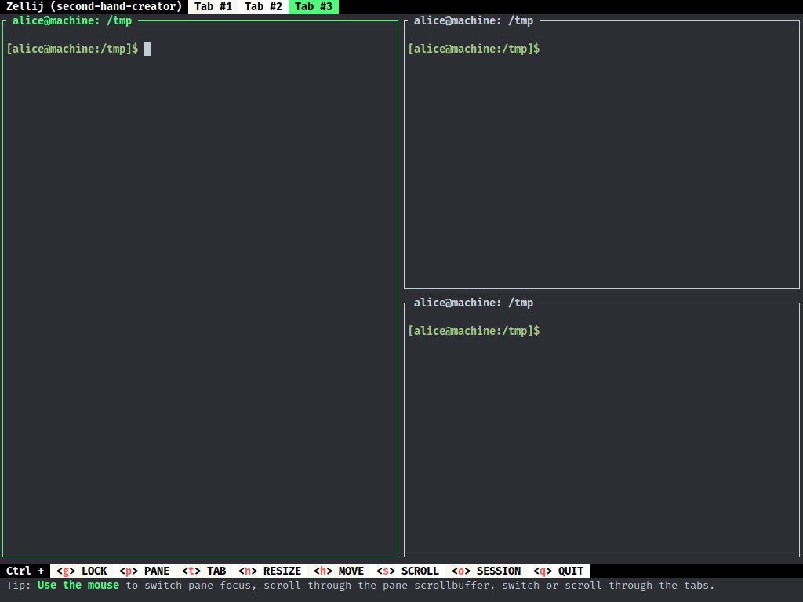
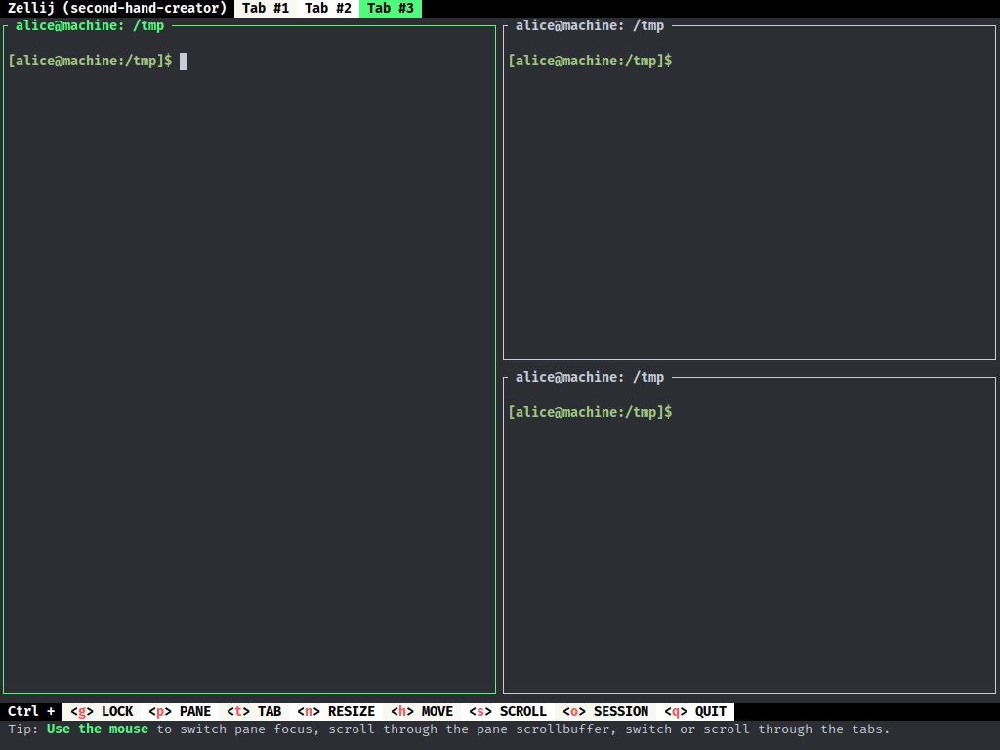
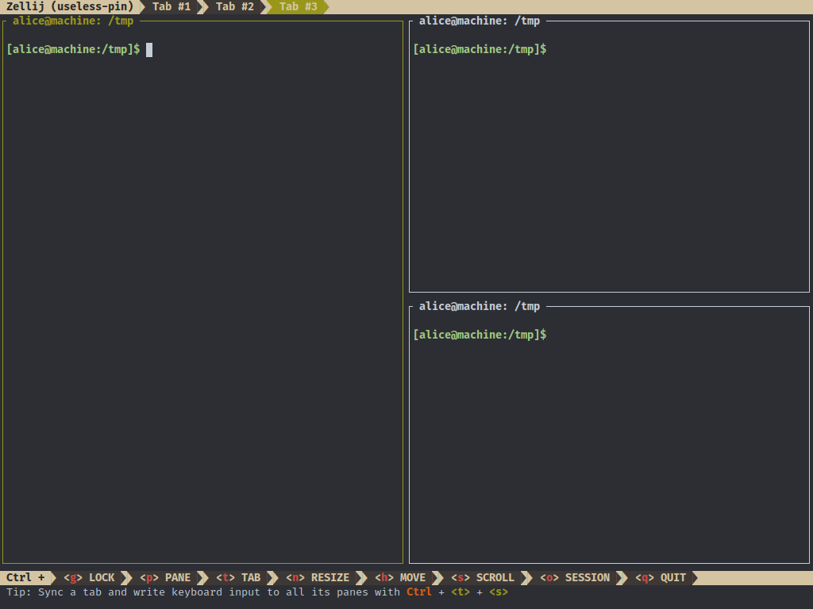
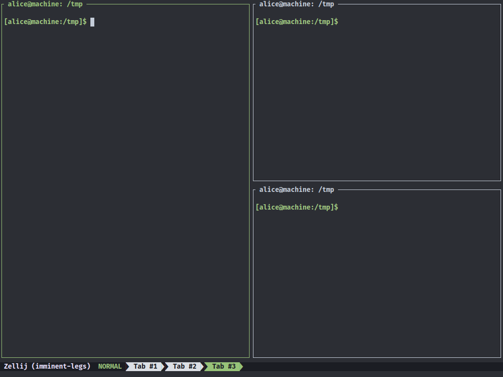
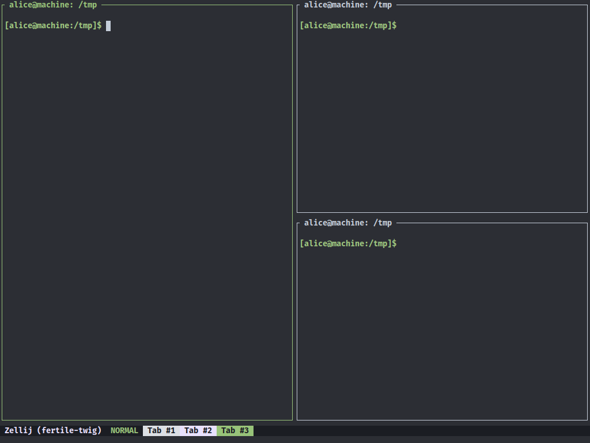
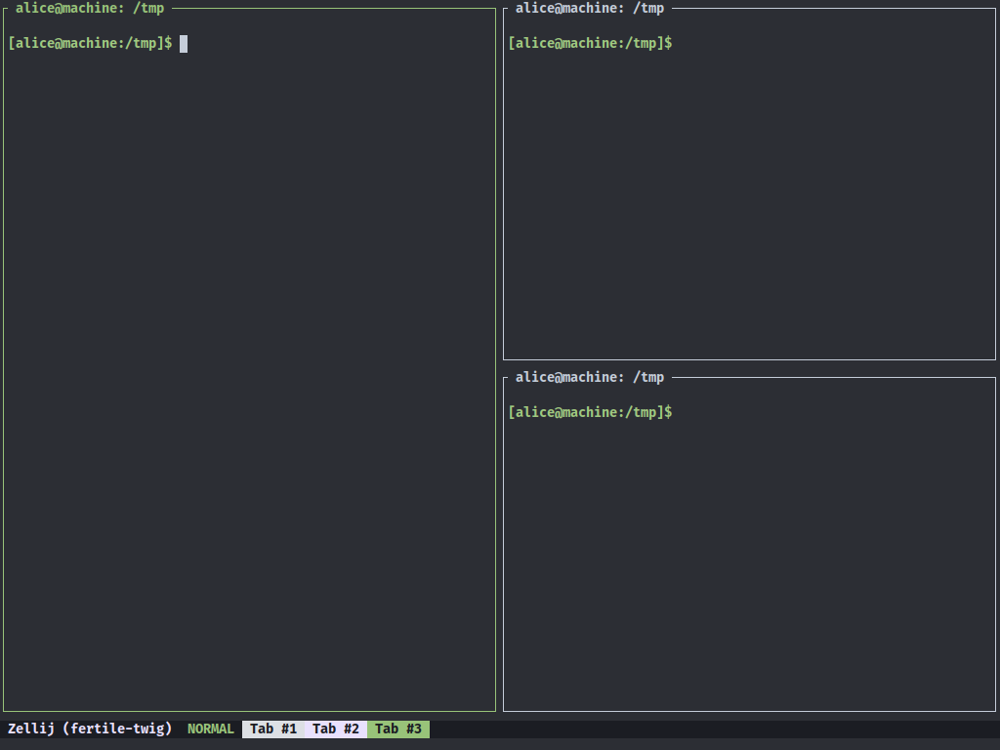
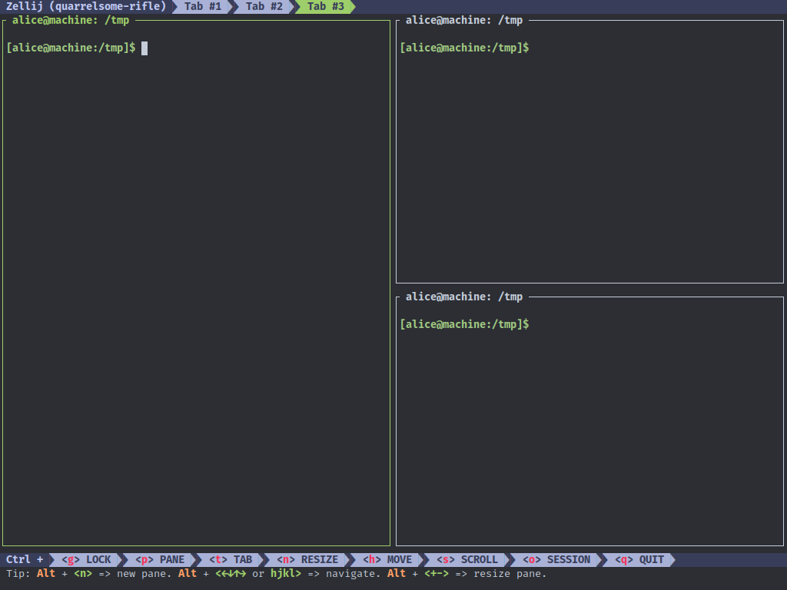
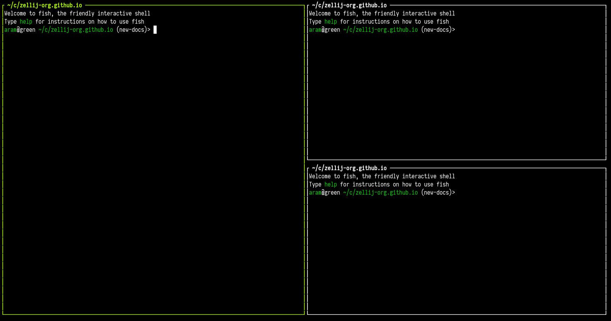
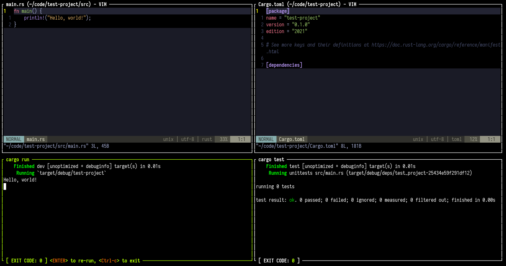
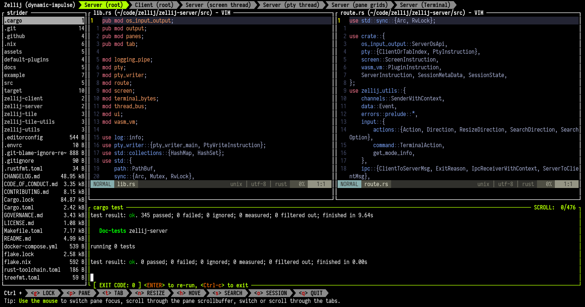

Introduction
This is the documentation for the Zellij terminal workspace.
- For installing Zellij, see: Installation
- For configuring Zellij, see: Configuration
- For Operating System Compatibility and Known Issues, see: Compatibility
- For setting up layouts: Layouts
- For developing plugins: Plugins
You can also check out some Screencasts & Tutorials about using Zellij.
Looking for the docs for versions <0.32.0? Look no further!
Installation
The easiest way to install Zellij is through a package for your OS.
If one is not available for your OS, you can download a prebuilt binary or even try Zellij without installing.
Otherwise, you can install it with Cargo.
Rust - Cargo
For instructions on how to install Cargo see here.
Once installed run:
cargo install --locked zellij
If experiencing errors, if installed through rustup, please try running:
rustup update
Binary Download
Binaries are made available each release for the Linux and MacOS operating systems.
It is possible to download the binaries for these on the release page.
Once downloaded, untar the file:
tar -xvf zellij*.tar.gz
check for the execution bit:
chmod +x zellij
and then execute Zellij:
./zellij
Include the directory Zellij is in, in your PATH Variable if you wish to be able to execute it anywhere.
'Or'
move Zellij to a directory already included in your [$PATH] Variable.
Compiling Zellij From Source
Instructions on how to compile Zellij from source can be found here.
Third party repositories
Zellij is packaged in some third part repositories. Please keep in mind that they are not directly affiliated with zellij maintainers:

More information about third party installation can be found here.
Overview
Zellij is a workspace aimed at developers, ops-oriented people and anyone who loves the terminal. At its core, it is a terminal multiplexer (similar to tmux and screen), but this is merely its infrastructure layer.
Zellij has a native layout and plugin system. To understand Zellij a little bit better, let us take a look at the default configuration.
Default Configuration

The default configuration consists of:
- The tab-bar plugin. It shows current tabs that are in use as well as the session name.
- The pane, in which the default shell is started. The title the shell sets can be seen in the upper left corner of the pane.
- The status-bar plugin. It gives an overview over current default keybindings, since Zellij is modal it can show hints based on modes it currently resides in.
To dive deeper in to how the default layout works and how to change it, checkout the layouts section.
Let's open a new tab and then a couple panes inside that new tab:
- Ctrl + t
- n
- Ctrl + p
- n
- r
- Return
The status-bar should have guided us through:

 And this is our current state:
And this is our current state:
 Zellij doesn't need a terminal to keep commands running, because it uses a client
and server system. Let us disconnect and reconnect to the same session now:
Zellij doesn't need a terminal to keep commands running, because it uses a client
and server system. Let us disconnect and reconnect to the same session now:
- Ctrl + o
- d

If only one server session is running in the background zellij can restore the connection automatically, if not then we need a specific session name. We can get the name in the following way:
zellij list-sessions
And now we reattach to the currently running session:
zellij attach hilarious-kitty
Integration
Zellij provides some environment variables, that make Integration with existing tools possible.
echo $ZELLIJ
echo $ZELLIJ_SESSION_NAME
The ZELLIJ_SESSION_NAME has the session name as its value, and ZELLIJ gets
set to 0 inside a zellij session.
Arbitrary key value pairs can be set through configuration, or layouts.
Here are some limited examples to help get you started:
Autostart on shell creation
Autostart a new zellij shell, if not already inside one. Shell dependent, fish:
if set -q ZELLIJ
else
zellij
end
other ways, zellij provides a pre-defined auto start scripts.
bash
echo 'eval "$(zellij setup --generate-auto-start bash)"' >> ~/.bashrc
zsh
echo 'eval "$(zellij setup --generate-auto-start zsh)"' >> ~/.zshrc
fish
⚠️ Depending on the version of the fish shell, the setting may not work. In that case, check out this issue.
Add
if status is-interactive
...
eval (zellij setup --generate-auto-start fish | string collect)
end
to $HOME/.config/fish/config.fish file.
The following environment variables can also be used in the provided script.
| Variable | Description | default |
|---|---|---|
ZELLIJ_AUTO_ATTACH | If the zellij session already exists, attach to the default session. (not starting as a new session) | false |
ZELLIJ_AUTO_EXIT | When zellij exits, the shell exits as well. | false |
List current sessions
List current sessions, attach to a running session, or create a new one.
Depends on sk & bash
#!/usr/bin/env bash
ZJ_SESSIONS=$(zellij list-sessions)
NO_SESSIONS=$(echo "${ZJ_SESSIONS}" | wc -l)
if [ "${NO_SESSIONS}" -ge 2 ]; then
zellij attach \
"$(echo "${ZJ_SESSIONS}" | sk)"
else
zellij attach -c
fi
List layout files and create a layout
List layout files saved in the default layout directory,
opens the selected layout file.
Depends on: tr, fd, sed, sk, grep & bash
#!/usr/bin/env bash
set -euo pipefail
ZJ_LAYOUT_DIR=$(zellij setup --check \
| grep "LAYOUT DIR" - \
| grep -o '".*"' - | tr -d '"')
if [[ -d "${ZJ_LAYOUT_DIR}" ]];then
ZJ_LAYOUT="$(fd --type file . "${ZJ_LAYOUT_DIR}" \
| sed 's|.*/||' \
| sk \
|| exit)"
zellij --layout "${ZJ_LAYOUT}"
fi
FAQ
Zellij overrides certain key combinations that I use for other apps, what can I do?
As an "escape hatch" solution, you can lock the interface with Ctrl + g - at this point all keys will be sent to the focused pane.
You could also remap keys to work around this problem.
That being said, the maintainers are aware that this default set of keybindings is not an ideal solution. We tried to find a solution that would both be powerful, allowing few and memorable keypresses to be used for common actions, and also unobtrusive. Finding a solution that would do better in the latter while still maintaining the former is something we're actively thinking about and planning on changing in the future. If you have any thoughts, please do share them in an issue or in one of our chat servers.
The UI takes up too much space, what can I do about it?
You can load the compact layout with zellij --layout compact.
Additionally, you can disable pane frames either at runtime with Ctrl + <p> + <z> or through the config with pane_frames: false.
I see broken characters in the default UI, how can I fix this?
This means your default terminal font doesn't include some special characters used by Zellij. A safe bet would be to install and use a font from nerdfonts.
If you don't want to install a new font, you can also load the simplified UI that doesn't use these characters, with:
zellij options --simplified-ui true
Copy / Paste isn't working, how can I fix this?
Some terminals don't support the the OSC 52 signal, which is the method Zellij uses by default to copy text to the clipboard. To get around this, you can either switch to a supported terminal (eg. Alacritty or xterm) or configure Zellij to use an external utility when copy pasting (eg. xclip, wl-copy or pbcopy).
To do the latter, add one of the following to your Zellij Config:
copy_command: "xclip -selection clipboard" # x11
copy_command: "wl-copy" # wayland
copy_command: "pbcopy" # osx
Note that the only method that works when connecting to a remote Zellij session (eg. through SSH) is OSC 52. If you require this functionality, please consider using a terminal that supports it.
How can I use floating panes?
You can toggle showing/hiding floating panes with Ctrl + <p> + <w> (if no floating panes are open, one will be opened when they are shown).
In this mode you can create additional windows as you would normally create panes (eg. with Alt + <n>). Move them with the mouse or the keyboard, and resize them as you would normally resize or move Zellij panes.
You can also embed a floating pane with Ctrl + <p> + <e>, and float an embedded pane in the same way.
How can I sync input to multiple panes?
You can toggle sync input to all panes in a tab with Ctrl + <t> + <s>. Then everything you type will be sent to all panes in the tab.
Editing the pane scrollbuffer with ctrl + <s> + <e> doesn't work, what's wrong?
By default, Zellij looks for an editor defined in the EDITOR or VISUAL environment variables (in this order).
Make sure one is set (eg. export EDITOR=/usr/bin/vim) before Zellij starts.
Alternatively, you can set one in the Zellij config using scrollback-editor.
Commands
These commands can be invoked with zellij [SUBCOMMAND].
For more details, each subcommand has its own help section when run with the
--help flag (zellij [SUBCOMMAND] --help).
attach [session-name]
short: a
Zellij will attempt to attach to an already running session, with the name
[session-name].
If given no [session-name] and there is only one running session, it will attach to that session.
The attach subcommand will also accept the optional options subcommand.
list-sessions
short: ls
Will list all the names of currently running sessions.
kill-sessions [target-session]
short: k
Will kill the session with the name of [target-session], if it is currently
running.
kill-all-sessions
short: ka
Will prompt the user to kill all running sessions.
options
Can be used to change the behaviour of zellij on startup. Will supercede options defined in the config file. To see a list of options look here.
setup
Functionality to help with the setup of zellij.
| Flag | Description |
|---|---|
| --check | Check the configuration |
| --clean | Start with default configuration |
| --dump-config | Dump the default configuration file to stdout |
| --dump-layout [LAYOUT] | Dump a specified default layout file to stdout |
| --generate-completion [SHELL] | Generate completions for the specified shell |
Flags
These flags can be invoked with zellij --flag.
| Flag | Description |
|---|---|
| --help | Display the help prompt |
| --debug | Gather additional debug information |
| --version | Print version information |
Configuration
Zellij uses KDL as its configuration language.
Quickstart:
mkdir ~/.config/zellij
zellij setup --dump-config > ~/.config/zellij/config.kdl
Looking for the YAML configuration docs for versions <0.32.0? Look no further!
Where does Zellij look for the config file?
By default Zellij will look for config.kdl in the config directory.
Zellij will search for the config directory as follows:
-
--config-dirflag -
ZELLIJ_CONFIG_DIRenv variable -
$HOME/.config/zellij -
default location
- Linux:
/home/alice/.config/zellij - Mac:
/Users/Alice/Library/Application Support/org.Zellij-Contributors.Zellij
- Linux:
-
system location (
/etc/zellij)
How to bypass the config file?
In order to pass a config file directly to zellij:
zellij --config [FILE]
or use the ZELLIJ_CONFIG_FILE environment variable.
To start without loading configuration from default directories:
zellij options --clean
How to dump the default configuration to STDOUT?
To show the current default configuration:
zellij setup --dump-config
Options
Configuration options can be set directly at the root of the configuration file
These include:
on_force_close
Choose what to do when zellij receives SIGTERM, SIGINT, SIGQUIT or SIGHUP eg. when terminal window with an active zellij session is closed
Options:
- detach (Default)
- quit
on_force_close "quit"
simplified_ui
Send a request for a simplified ui (without arrow fonts) to plugins
Options:
- true
- false (Default)
simplified_ui true
default_shell
Choose the path to the default shell that zellij will use for opening new panes
Default: $SHELL
default_shell "fish"
pane_frames
Toggle between having pane frames around the panes
Options:
- true (default)
- false
pane_frames true
theme
Choose the Zellij color theme. This theme must be specified in the themes section or loaded from the themes folder. See themes
Default: default
theme "default"
default_layout
The name of the layout to load on startup (must be in the layouts folder). See layouts
Default: "default"
default_layout "compact"
default_mode "locked"
Choose the mode that zellij uses when starting up.
Default: normal
default_mode "locked"
mouse_mode
Toggle enabling the mouse mode. On certain configurations, or terminals this could potentially interfere with copying text.
Options:
- true (default)
- false
mouse_mode false
scroll_buffer_size
Configure the scroll back buffer size This is the number of lines zellij stores for each pane in the scroll back buffer. Excess number of lines are discarded in a FIFO fashion.
Valid values: positive integers
Default value: 10000
scroll_buffer_size 10000
copy_command
Provide a command to execute when copying text. The text will be piped to the stdin of the program to perform the copy. This can be used with terminal emulators which do not support the OSC 52 ANSI control sequence that will be used by default if this option is not set.
Examples:
copy_command "xclip -selection clipboard" // x11
copy_command "wl-copy" // wayland
copy_command "pbcopy" // osx
copy_clipboard
Choose the destination for copied text Allows using the primary selection buffer (on x11/wayland) instead of the system clipboard. Does not apply when using copy_command.
Options:
- system (default)
- primary
copy_clipboard "primary"
copy_on_select
Enable or disable automatic copy (and clear) of selection when releasing mouse
Default: true
copy_on_select false
scrollback_editor
Path to the default editor to use to edit pane scrollbuffer as well as the CLI and layout edit commands
Default: $EDITOR or $VISUAL
scrollback_editor "/usr/bin/vim"
mirror_session
When attaching to an existing session with other users, should the session be mirrored (true) or should each user have their own cursor (false) Default: false
mirror_session true
layout_dir
The folder in which Zellij will look for layouts
layout_dir "/path/to/my/layout_dir"
theme_dir
The folder in which Zellij will look for themes
theme_dir "/path/to/my/theme_dir"
env
A key -> value map of environment variables that will be set for each terminal pane Zellij starts.
env {
RUST_BACKTRACE 1
FOO "bar"
}
rounded corners
Set whether the pane frames (if visible) should have rounded corners.
This config variable is set differently than others:
ui {
pane_frames {
rounded_corners true
}
}
Configuring Keybindings
Zellij comes with a default set of keybindings that try to fit as many different users and use cases while trying to maximize comfort for everyone.
It is possible to add to these defaults or even override them with an external configuration. For more information about the configuration file itself, see Configuration.
Keybindings can be configured in the keybinds block of the file.
keybinds {
// keybinds are divided into modes
normal {
// bind instructions can include one or more keys (both keys will be bound separately)
// bind keys can include one or more actions (all actions will be performed with no sequential guarantees)
bind "Ctrl g" { SwitchToMode "locked"; }
bind "Ctrl p" { SwitchToMode "pane"; }
bind "Alt n" { NewPane; }
bind "Alt h" "Alt Left" { MoveFocusOrTab "Left"; }
}
pane {
bind "h" "Left" { MoveFocus "Left"; }
bind "l" "Right" { MoveFocus "Right"; }
bind "j" "Down" { MoveFocus "Down"; }
bind "k" "Up" { MoveFocus "Up"; }
bind "p" { SwitchFocus; }
}
locked {
bind "Ctrl g" { SwitchToMode "normal"; }
}
}
Modes
The keybindings are divided into several modes. Each mode has its separate keybindings.
eg.
keybinds {
normal {
// keybindings available in normal mode
}
pane {
// keybindings available in pane mode
}
}
The available modes are:
- normal
- locked
- resize
- pane
- move
- tab
- scroll
- search
- entersearch
- renametab
- renamepane
- session
- tmux
Binding keys
Keys are bound with bind instructions inside each mode. A bind instruction consists of a list of keys to be bound, as well as a list of actions to be bound to each of those keys.
Note: All actions will be performed with no sequential guarantees.
eg.
// bind the Alt-n to open a new pane
bind "Alt n" { NewPane; }
// bind both the "h" key and the left-arrow key to move pane focus left
bind "h" "Left" { MoveFocus "Left"; }
// bind the "f" key to toggle the focused pane full-screen and switch to normal mode
bind "f" { ToggleFocusFullscreen; SwitchToMode "Normal"; }
Overriding keys
When configured, keybindings override the default keybinds of the application individually (if a certain key was bound in the configuration, it overrides that key in the default configuration).
It's possible to explicitly unbind a key:
keybinds {
unbind "Ctrl g" // unbind in all modes
normal {
unbind "Alt h" "Alt n" // unbind one or more keys in a specific mode
}
}
It's also possible to use the special clear-defaults=true attribute either globally or in a specific mode:
keybinds clear-defaults=true { // will clear all default keybinds
normal {
// ...
}
}
keybinds {
normal clear-defaults=true { // will clear all keybinds in normal mode
// ...
}
}
Keys
Keys are defined in a single quoted string, with space delimiting modifier keys.
bind "a" // bind the individual character a
bind "Ctrl a" // bind a with the ctrl modifier
bind "Alt a" // bind a with the alt modifier
bind "F8" // bind the F8 key
bind "Left" // bind the left arrow key
-
Possible keys with the Ctrl modifier:
- characters (eg.
a)
- characters (eg.
-
Possible keys with the Alt modifier:
- characters (eg.
a) Left|Right|Up|Down
- characters (eg.
-
Possible keys without a modifier
- characters (eg.
a) BackspaceLeftRightUpDownHomeEndPageUpPageDownTabDeleteInsertSpaceEnterEsc
- characters (eg.
Possible Actions
-
CloseFocus- close the focused panePossible arguments: None
eg.
bind "a" { CloseFocus; } -
CloseTab- close the focused tabPossible arguments: None
eg.
bind "a" { CloseTab; } -
Detach- detach from the current session, leaving it running in the backgroundPossible arguments: None
eg.
bind "a" { Detach; } -
DumpScreen- dump the contents of the focused pane, including its entire scrollback, to the specified file.Required arguments: A path to a file on the hard-drive
eg.
bind "a" { DumpScreen "/tmp/my-dump.txt"; } -
EditScrollback- edit the scrollback of the currently focused pane with the user's default editor.Possible arguments: None
bind "a" { EditScrollback; } -
FocusNextPane- change focus to the next pane (order not guaranteed)Possible arguments: None
bind "a" { FocusNextPane; } -
FocusPreviousPane- change focus to the previous pane (order not guaranteed)Possible arguments: None
bind "a" { FocusPreviousPane; } -
GoToNextTab- change focus to the next tabPossible arguments: None
bind "a" { GoToNextTab; } -
GoToPreviousTab- change focus to the previous tabPossible arguments: None
bind "a" { GoToPreviousTab; } -
GoToTab- change focus to a tab with a specific indexRequired arguments: numeric tab index (eg. 1)
bind "a" { GoToTab 1; } -
HalfPageScrollDown- scroll the focused pane half a page downPossible arguments: None
bind "a" { HalfPageScrollDown; } -
HalfPageScrollUp- scroll the focused pane half a page upPossible arguments: None
bind "a" { HalfPageScrollUp; } -
MoveFocus- move focus in a specific directionRequired arguments:
Left|Right|Up|Downbind "a" { MoveFocus "Left"; } -
MoveFocusOrTab- move focus left or right, or to the next or previous tab if on screen edgeRequired arguments:
Left|Rightbind "a" { MoveFocusOrTab "Left"; } -
MovePane- move the position of the focused pane in the specific directionRequired arguments:
Left|Right|Up|Downbind "a" { MovePane "Left"; } -
NewPane- open a new pane (in the specified direction)Possible arguments:
Down|RightBehaviour without arguments: Opens a pane in the largest available space or if floating panes are visible, in the next floating pane position.
bind "a" { NewPane "Right"; } -
NewTab- open a new tabPossible arguments: None
bind "a" { NewTab; } -
PageScrollDown- scroll the focused pane one page downPossible arguments: None
bind "a" { PageScrollDown; } -
PageScrollUp- scroll the focused pane one page upPossible arguments: None
bind "a" { PageScrollUp; } -
Quit- quit Zellij :(Possible arguments: None
bind "a" { Quit; } -
Resize- resize the focused pane either in the specified direction or increase/decrease its size automaticallyRequired arguments:
Left|Right|Up|Down|Increase|Decreasebind "a" { Resize "Increase"; } -
Run- run the specified commandRequired arguments: The command to run, followed by optional arguments
Possible arguments:
cwd- current working directory,direction- the direction to open the new command pane// will run "tail -f /tmp/foo" in a pane opened below the focused one bind "a" { Run "tail" "-f" "foo" { cwd "/tmp" direction "Down" } } -
ScrollDown - scroll the focused pane down 1 line
Possible arguments: None
bind "a" { ScrollDown; } -
ScrollToBottom - scroll the focused pane completely down
Possible arguments: None
bind "a" { ScrollToBottom; } -
ScrollUp - scroll the focused pane up 1 line
Possible arguments: None
bind "a" { ScrollUp; } -
Search - when searching, move to the next or previous search occurrence
Required arguments: "down" | "up"
bind "a" { Search "up"; } -
SearchToggleOption - toggle various search options on/off
Required arguments: "CaseSensitivity" | "Wrap" | "WhileWord"
bind "a" { SearchToggleOption "CaseSensitivity"; } -
SwitchToMode - switch the current input mode
Required arguments: See Modes
bind "a" { SwitchToMode "locked"; } -
ToggleActiveSyncTab - toggle the syncing of input between all panes in the focused tab
Possible arguments: None
bind "a" { ToggleActiveSyncTab; } -
ToggleFloatingPanes - show/hide floating panes; if none are open, one will be opened
Possible arguments: None
bind "a" { ToggleFloatingPanes; } -
ToggleFocusFullscreen - toggle the focused pane as fullscreen on/off
Possible arguments: None
bind "a" { ToggleFocusFullscreen; } -
ToggleMouseMode - toggle mouse support on/off
Possible arguments: None
bind "a" { ToggleMouseMode; } -
TogglePaneEmbedOrFloating - float focused embedded pane or embed focused floating pane
Possible arguments: None
bind "a" { TogglePaneEmbedOrFloating; } -
TogglePaneFrames - show/hide the frames around panes (notice, these might have valuable UX info)
Possible arguments: None
bind "a" { TogglePaneFrames; } -
ToggleTab - change the tab focus
Possible arguments: None
bind "a" { ToggleTab; } -
UndoRenamePane - undo a rename pane operation currently in progress (reverting to the previous name)
Possible arguments: None
bind "a" { UndoRenamePane; } -
UndoRenameTab - undo a rename tab operation currently in progress (reverting to the previous name)
Possible arguments: None
bind "a" { UndoRenameTab; } -
Write - write bytes to the active pane
Required arguments: the bytes to write as integers
bind "a" { Write 102 111 111; } -
WriteChars - write a string of characters to the active pane
Required arguments: the string of characters to write
bind "a" { WriteChars "hi there!"; }
Shared bindings
There are three special node types that can be used when defining keybindings:
keybinds {
shared {
// these keybindings will be present in all modes
bind "Ctrl g" { SwitchToMode "locked"; }
}
shared_except "resize" "locked" {
// these keybindings will be present in all modes except "resize" and "locked"
bind "Ctrl g" { SwitchToMode "locked"; }
}
shared_among "resize" "locked" {
// these keybindings will be present in the "resize" and "locked" modes
bind "Ctrl g" { SwitchToMode "locked"; }
}
}
Themes
Themes can be specified either in the configuration file under the themes section, or directly in a separate file.
Truecolor themes
themes {
dracula {
fg 248 248 242
bg 40 42 54
black 0 0 0
red 255 85 85
green 80 250 123
yellow 241 250 140
blue 98 114 164
magenta 255 121 198
cyan 139 233 253
white 255 255 255
orange 255 184 108
}
}
256 color themes
themes {
default {
fg 1
bg 10
black 20
red 30
green 40
yellow 50
blue 60
magenta 70
cyan 80
white 90
orange 254
}
}
Hexadecimal color themes
themes {
nord {
fg "#D8DEE9"
bg "#2E3440"
black "#3B4252"
red "#BF616A"
green "#A3BE8C"
yellow "#EBCB8B"
blue "#81A1C1"
magenta "#B48EAD"
cyan "#88C0D0"
white "#E5E9F0"
orange "#D08770"
}
}
Getting Zellij to pick up the theme
If the theme is called default, then zellij will pick it on startup.
To specify a different theme, run zellij with:
zellij options --theme [NAME]
or put the name in the configuration file with theme: [NAME] as follows:
keybinds {
// ...
}
// ...
// Choose the theme that is specified in the themes section.
theme "default"
themes {
default {
fg "#000000"
// ...
}
}
or If you don't want to modify the configuration file, just add a theme, you can use the themes directory.
themes is located in CONFIG_DIR/themes by default. You can check it through zellij setup --check.
If you place the theme file in this folder, zelij will automatically merge the themes.
And you can set the theme through the options (options --theme) as in the first method.
Here are some example themes.
Theme Gallery
This page showcases the example themes that are included inside of the main zellij repository.
Dracula

More Dracula
 


Gruvbox Dark

More Gruvbox Dark


Gruvbox Light

More Gruvbox Light


Molokai Dark

More Molokai Dark


Nord

More Nord


One Half Dark

More One Half Dark

 

Solarized Dark

More Solarized Dark


Tokyo Night

More Tokyo Night


Tokyo Night Light

More Tokyo Night Light


Tokyo Night Storm

More Tokyo Night Storm


Command Line Configuration Options
In addition to the configuration file, zellij can also be configured through the command line when running it. These options will override options in the configuration file.
USAGE:
zellij options [OPTIONS]
OPTIONS:
--attach-to-session <ATTACH_TO_SESSION>
Whether to attach to a session specified in "session-name" if it exists [possible
values: true, false]
--copy-clipboard <COPY_CLIPBOARD>
OSC52 destination clipboard [possible values: system, primary]
--copy-command <COPY_COMMAND>
Switch to using a user supplied command for clipboard instead of OSC52
--copy-on-select <COPY_ON_SELECT>
Automatically copy when selecting text (true or false) [possible values: true, false]
--default-layout <DEFAULT_LAYOUT>
Set the default layout
--default-mode <DEFAULT_MODE>
Set the default mode
--default-shell <DEFAULT_SHELL>
Set the default shell
--disable-mouse-mode
Disable handling of mouse events
Print help information
--layout-dir <LAYOUT_DIR>
Set the layout_dir, defaults to subdirectory of config dir
--mirror-session <MIRROR_SESSION>
Mirror session when multiple users are connected (true or false) [possible values: true,
false]
--mouse-mode <MOUSE_MODE>
Set the handling of mouse events (true or false) Can be temporarily bypassed by the
[SHIFT] key [possible values: true, false]
--no-pane-frames
Disable display of pane frames
--on-force-close <ON_FORCE_CLOSE>
Set behaviour on force close (quit or detach)
--pane-frames <PANE_FRAMES>
Set display of the pane frames (true or false) [possible values: true, false]
--scroll-buffer-size <SCROLL_BUFFER_SIZE>
--scrollback-editor <SCROLLBACK_EDITOR>
Explicit full path to open the scrollback editor (default is $EDITOR or $VISUAL)
--session-name <SESSION_NAME>
The name of the session to create when starting Zellij
--simplified-ui <SIMPLIFIED_UI>
Allow plugins to use a more simplified layout that is compatible with more fonts (true
or false) [possible values: true, false]
--theme <THEME>
Set the default theme
--theme-dir <THEME_DIR>
Set the theme_dir, defaults to subdirectory of config dir
Migrating from old YAML layouts / configs
Starting from Zellij 0.32.0, Zellij uses KDL layouts as described in these documents.
Up until this version, Zellij used YAML configuration files as described in the old documents kept here for posterity.
As a matter of convenience, when Zellij is run with an old configuration / layout / theme file (either explicitly with a cli flag or if it found the file in the default locations) it will prompt the user and convert that file to the new format.
This can also be done manually:
$ zellij convert-config /path/to/my/config.yaml > /path/to/my/config.kdl
$ zellij convert-layout /path/to/my/layout.yaml > /path/to/my/layout.kdl
$ zellij convert-theme /path/to/my/theme.yaml > /path/to/my/theme.kdl
Controlling Zellij through the CLI
Zellij can be controlled through the CLI. Meaning that while inside a zellij session, one can issue commands from the terminal to interact with the currently running session.
eg.
$ zellij action new-pane
Commands can also be issued to a different Zellij session:
$ zellij --session pretentious-cat action new-pane
For a full list of actions, see CLI Actions.
For starting commands in a new pane, see Zellij Run.
For editing a file in a new pane with your own editor, see Zellij Edit.
Completions
For convenience, zellij provides cli completions for popular shells.
You can dump these completions to STDOUT and then append them to your shell's configuration file with:
$ zellij setup --generate-completion fish
$ zellij setup --generate-completion bash
$ zellij setup --generate-completion zsh
These completions also include aliases for running a command in a new pane and editing a file in a new pane:
$ zr tail -f /path/to/my/file # open a new pane tailing this file
$ zrf htop # open a new floating pane with htop
$ ze ./main.rs # open a new pane with your editor (eg. vim) pointed at ./main.rs
See your shell's documentation for information on where to append these.
Zellij Run
Zellij includes a top-level run command that can be used to launch a new Zellij pane running a specific command:
eg.
$ zellij run -- git diff
OPTIONS:
-c, --close-on-exit Close the pane immediately when its command exits
--cwd <CWD> Change the working directory of the new pane
-d, --direction <DIRECTION> Direction to open the new pane in
-f, --floating Open the new pane in floating mode
-h, --help Print help information
-n, --name <NAME> Name of the new pane
-s, --start-suspended Start the command suspended, only running after you first presses
ENTER
Note: to shorten this command to a more friendly length, see Completions under: CLI
This new pane will not immediately close when the command exits. Instead, it will show its exit status on the pane frame and allow users to press <ENTER> to re-run the command inside the same pane, or <Ctrl-c> to close the pane.
We feel this is a new and powerful way to interact with the command line.

Zellij Edit
It's possible to open your default editor pointed at a file in a new Zellij pane.
This can be useful to save time instead of opening a new pane and starting your default editor inside it manually.
eg.
$ zellij edit ./main.rs # open main.rs in a new pane
$ zellij edit --floating ./main.rs # open main.rs in a new floating pane
$ zellij edit ./main.rs --line-number 10 # open main.rs pointed at line number 10
Possible Options:
-d, --direction <DIRECTION>
-f, --floating
-l, --line-number <LINE_NUMBER>
Note: The default editor is anything set in $EDITOR or $VISUAL - alternatively, it can be set explicitly with the scrollback_editor configuration option.
Another Note: To shorten this command, see Cli Completions
CLI Actions
close-pane
Close the focused pane
eg.
$ zellij action close-pane
close-tab
Close the current tab
eg.
$ zellij action close-tab
dump-screen
Dumps the pane scrollback to a file
ARGS: The path to the file on the hard-drive (eg. /tmp/screen-dump.txt)
eg.
$ zellij action dump-screen /tmp/screen-dump.txt
edit
Open the specified file in a new zellij pane with your default EDITOR
ARGS: The path to the file to open (eg. /tmp/my-file.rs)
OPTIONS:
-d, --direction <DIRECTION> [right|down]
-f, --floating
-l, --line-number <LINE_NUMBER>
eg.
$ zellij action edit ./my-file.rs -f
Note: it is also possible to issue this action without the action prefix:
eg.
$ zellij edit ./my-file.rs -f
edit-scrollback
Open the pane scrollback in your default editor
eg.
$ zellij action edit-scrollback
focus-next-pane
Change focus to the next pane
eg.
$ zellij action focus-next-pane
focus-previous-pane
Change focus to the previous pane
eg.
$ zellij action focus-previous-pane
go-to-next-tab
Go to the next tab
eg.
$ zellij action go-to-next-tab
go-to-previous-tab
Go to the previous tab
eg.
$ zellij action go-to-previous-tab
go-to-tab
Go to tab with index [index]
ARGS: The tab index (eg. 1)
eg.
$ zellij action go-to-tab 1
half-page-scroll-down
Scroll down half page in focus pane
eg.
$ zellij action half-page-scroll-down
half-page-scroll-up
Scroll up half page in focus pane
eg.
$ zellij action half-page-scroll-up
move-focus
Move the focused pane in the specified direction.
ARGS: The direction to move [right|left|up|down]
eg.
$ zellij action move-focus left
move-focus-or-tab
Move focus to the pane or tab (if on screen edge) in the specified direction
ARGS: The direction to move [right|left|up|down]
eg.
$ zellij action move-focus-or-tab left
move-pane
Change the location of the focused pane in the specified direction
ARGS: The direction to move [right|left|up|down]
eg.
$ zellij action move-pane left
new-pane
Open a new pane in the specified direction or as a floating pane. If no is specified, will try to use the biggest available space.
ARGS (optional): the command to run inside the pane in place of the default shell (must be preceeded by a double-dash --)
OPTIONS:
-c, --close-on-exit Close the pane immediately when its command exits
--cwd <CWD> Change the working directory of the new pane
-d, --direction <DIRECTION> Direction to open the new pane in
-f, --floating Open the new pane in floating mode
-h, --help Print help information
-n, --name <NAME> Name of the new pane
-s, --start-suspended Start the command suspended, only running after you first presses
eg.
$ zellij action new-pane -f # open a new floating pane with the default shell
$ zellij action new-pane --name "follow this log!" -- tail -f /tmp/my-log-file # open a new floating pane with the default shell
Note: This can also be shortened to zellij run
eg.
$ zellij run -- tail -f /tmp/my-log-file
new-tab
Create a new tab, optionally with a specified tab layout and name
Specifying a path to a layout file with --layout will start that tab with the specified layout.
If the --cwd flag if included with the --layout flag, all relative paths in that layout will start from this cwd. Replacing the global cwd in the layout if it exists.
See layout CWD composition for more info.
OPTIONS:
-c, --cwd <CWD>
-l, --layout <LAYOUT>
-n, --name <NAME>
page-scroll-down
Scroll down one page in focus pane
eg.
$ zellij action page-scroll-down
page-scroll-up
Scroll up one page in focus pane
eg.
$ zellij action page-scroll-up
rename-pane
Renames the focused pane (title will appear on the pane frame)
ARGS: the pane name
eg.
$ zellij action rename-pane "alice the cat"
rename-tab
Renames the focused tab
ARGS: the tab name
eg.
$ zellij action rename-tab "alice the cat"
resize
Resize the focused pane in the specified direction.
ARGS: The resize direction [right|left|up|down|+|-]
eg.
$ zellij action resize left
scroll-down
Scroll down 1 line in the focused pane
eg.
$ zellij action scroll-down
scroll-to-bottom
Scroll down to bottom in the focused pane
eg.
$ zellij action scroll-to-bottom
scroll-up
Scroll up 1 line in the focused pane
eg.
$ zellij action scroll-up
switch-mode
Switch input mode of all connected clients
ARGS: The mode to switch to [locked|pane|tab|resize|move|search|session|tmux]
eg.
$ zellij action switch-mode locked
toggle-active-sync-tab
Toggle between sending text input to all panes in the current tab and just to the focused pane (the default)
eg.
$ zellij action toggle-active-sync-tab
toggle-floating-panes
Toggle the visibility of all floating panes in the current Tab, open one if none exist
eg.
$ zellij action toggle-floating-panes
toggle-fullscreen
Toggle between fullscreen focus pane and normal layout
eg.
$ zellij action toggle-fullscreen
toggle-pane-embed-or-floating
Embed focused pane if floating or float focused pane if embedded
eg.
$ zellij action toggle-pane-embed-or-floating
toggle-pane-frames
Toggle frames around panes in the UI
Note: Zellij relies on frames to display parts of the UI, removing them might make certain things a little confusing to those not used to the app.
eg.
$ zellij action toggle-pane-frames
undo-rename-pane
Remove a previously set pane name
eg.
$ zellij action undo-rename-pane
undo-rename-tab
Remove a previously set tab name
eg.
$ zellij action undo-rename-tab
write
Write bytes to the focused pane
ARGS: An array of bytes to write
eg.
$ zellij action write 102 111 111
write-chars
Write characters to the focused pane
ARGS: A string of characters to write
eg.
$ zellij action write-chars "Hi there!"
Layouts
Layouts are text files that define an arrangement of Zellij panes and tabs.
You can read more about creating a layout
Looking for the YAML configuration docs for versions <0.32.0? Look no further!
Example
A basic layout can look like this:
// layout_file.kdl
layout {
pane
pane split_direction="vertical" {
pane
pane command="htop"
}
}
Which would create the following layout:

Applying a Layout
A layout can be applied when Zellij starts:
$ zellij --layout /path/to/layout_file.kdl
Or by setting it up in the configuration.
A layout can also be applied into a new tab in a running session:
$ zellij action new-tab --layout /path/to/layout_file.kdl
For more info, see: Controlling Zellij through the CLI.
Layout default directory
By default Zellij will load the default.kdl layout, found in the layouts directory (a subdirectory of the config directory [config/layouts]).
If not found, Zellij will start with one pane and one tab.
Layouts residing in the default directory can be accessed by their bare name:
zellij --layout [layout_name]
Layout Configuration Language
Zellij uses KDL as its configuration language.
Creating a Layout
Quickstart:
$ zellij setup --dump-layout default > /tmp/my-quickstart-layout-file.kdl
The layout structure is nested under a global layout node.
Within it are several possible node types:
pane- the basic building blocks of the layout, can represent shells, commands, plugins or logical containers for otherpanes.tab- represents a navigational Zellij tab and can containpanespane_template- define new nodes equivalent topanes with additional attributes or parameters.tab_template- define new nodes equivalent totabs with additional attributes or parameters.
Panes
pane nodes are the basic building blocks of a layout.
They could represent standalone panes:
layout {
pane // panes can be bare
pane command="htop" // panes can have arguments on the same line
pane {
// panes can have arguments inside child-braces
command "exa"
cwd "/"
}
pane command="ls" { // or a mixture of same-line and child-braces arguments
cwd "/"
}
}
They could also represent logical containers:
layout {
pane split_direction="vertical" {
pane
pane
}
}
Note: if panes represent logical containers, all their arguments should be specified on their title line.
split_direction
split_direction is a pane argument that indicates whether its children will be laid out vertically or horizontally.
Possible values: "vertical" | "horizontal"
Default value if omitted: "horizontal"
eg.
layout {
pane split_direction="vertical" {
pane
pane
}
pane {
// value omitted, will be layed out horizontally
pane
pane
}
}
Note: The layout node itself has a set value of "horizontal". It can be changed by adding a logical pane container:
layout {
pane split_direction="vertical" {
pane
pane
}
}
size
size is a pane argument that represents the fixed or percentage space taken up by this pane inside its logical container.
Possible values: quoted percentages (eg. "50%") | fixed values (eg. 1)
Note: specifying fixed values that are not unselectable plugins is currently unstable and might lead to unexpected behaviour when resizing or closing panes. Please see this issue.
eg.
layout {
pane size=5
pane split_direction="vertical" {
pane size="80%"
pane size="20%"
}
pane size=4
}
borderless
borderless is a pane argument indicating whether a pane should have a frame or not.
Possible values: true | false
Default value if omitted: false
eg.
layout {
pane borderless=true
pane {
borderless true
}
}
focus
focus is a pane argument indicating whether a pane should have focus on startup.
Possible values: true | false Default value if omitted: false
Note: specifying multiple panes with focus will result in the first one of them being focused.
eg.
layout {
pane focus=true
pane {
focus true
}
}
name
name is a string pane argument to change the default pane title.
Possible values: "a quoted string"
eg.
layout {
pane name="my awesome pane"
pane {
name "my amazing pane"
}
}
cwd
A pane can have a cwd argument, pointing to its Current Working Directory.
Possible values: "/path/to/some/folder", "relative/path/to/some/folder"
Note: If the cwd is a relative path, it will be appended to its containers' cwd read more about cwd composition
eg.
layout {
pane cwd="/"
pane {
command "git"
args "diff"
cwd "/path/to/some/folder"
}
}
command
command is a string (path) to an executable that should be run in this pane instead of the default shell.
Possible values: "/path/to/some/executable" | "executable" (the latter should be accessible through PATH)
eg.
layout {
pane command="htop"
pane {
command "/usr/bin/btm"
}
}
args
A pane with a command can also have an args argument. This argument can include one or more strings that will be passed to the command as its arguments.
Possible values: "a" "series" "of" "quoted" "strings"
Note: args must be inside the pane's child-braces and cannot be specified on the same line as the pane.
eg.
layout {
pane command="tail" {
args "-f" "/path/to/my/logfile"
}
// Hint: include "quoted" shell arguments as a single argument:
pane command="bash" {
args "-c" "tail -f /path/to/my/logfile"
}
}
close_on_exit
A pane with a command can also have a close_on_exit argument. If true, this pane will close immediately when its command exits - instead of the default behaviour which is to give the user a chance to re-run it with ENTER and see its exit status
Possible values: true | false
eg.
layout {
pane command="htop" close_on_exit=true
}
start_suspended
A pane with a command can also have a start_suspended argument. If true, this pane will not immediately run the command on startup, but rather display a message inviting the user to press <ENTER> to first run the command. It will then behave normally. This can be useful when starting a layout with lots of commands and not wanting all of them to immediately run.
Possible values: true | false
eg.
layout {
pane command="ls" start_suspended=true
}
edit
edit is a string (path) to a file that will be opened using the editor specified in the EDITOR or VISUAL environment variables. This can alternatively also be specified using the scrollback_editor config variable.
Possible values: "/path/to/some/file" | "./relative/path/from/cwd"
Note: If the value is a relative path, it will be appended to its containers' cwd read more about cwd composition
eg.
layout {
pane split_direction="vertical" {
pane edit="./git_diff_side_a"
pane edit="./git_diff_side_b"
}
}
plugin
plugin is a pane argument the points to a Zellij plugin to load. Currently is is only possible to specify inside the child-braces of a pane followed by a URL location in quoted string.
Possible values: zellij:internal-plugin | file:/path/to/my/plugin.wasm
eg.
layout {
pane {
plugin location="zellij:status-bar"
}
}
Tabs
tab nodes can optionally be used to start a layout with several tabs.
Note: all tab arguments should be specified on its title line. The child-braces are reserved for its child panes.
eg.
layout {
tab // a tab with a single pane
tab {
// a tab with three horizontal panes
pane
pane
pane
}
tab name="my third tab" split_direction="vertical" {
// a tab with a name and two vertical panes
pane
pane
}
}
split_direction
Tabs can have a split_direction just like panes. This argument indicates whether the tab's children will be laid out vertically or horizontally.
Possible values: "vertical" | "horizontal"
Default value if omitted: "horizontal"
eg.
layout {
tab split_direction="vertical" {
pane
pane
}
tab {
// if omitted, will be "horizontal" by default
pane
pane
}
}
focus
Tabs can have a focus just like panes. This argument indicates whether a tab should have focus on startup.
Possible values: true | false
Default value if omitted: false
Note: only one tab can be focused.
eg.
layout {
tab {
pane
pane
}
tab focus=true {
pane
pane
}
}
name
Tabs can have a name just like panes. This argument is a string to change the default tab title.
Possible values: "a quoted string"
eg.
layout {
tab name="my awesome tab"
tab name="my amazing tab" {
pane
}
}
cwd
Tabs can have a cwd just like panes - pointing to their Current Working Directory.
All panes in this tab will have this cwd prefixed to their own cwd (if they have one) or start in this cwd if they don't.
Possible values: "/path/to/some/folder", "relative/path/to/some/folder"
Note: If the cwd is a relative path, it will be appended to its containers' cwd read more about cwd composition
eg.
layout {
tab name="my amazing tab" cwd="/tmp" {
pane // will have its cwd set to "/tmp"
pane cwd="foo" // will have its cwd set to "/tmp/foo"
pane cwd="/home/foo" // will have its cwd set to "/home/foo", overriding the tab cwd with its absolute path
}
}
Templates
Templates can be used avoid repetition when creating layouts. Each template has a name that should be used directly as a node name instead of "pane" or "tab".
Pane Templates
Pane templates can be used to shorten pane attributes:
layout {
pane_template name="htop" {
command "htop"
}
pane_template name="htop-tree" {
command "htop"
args "--tree"
borderless true
}
// the below will create a template with four panes
// the top and bottom panes running htop and the two
// middle panes running "htop --tree" without a pane frame
htop
htop-tree
htop-tree
htop
}
Pane templates with the command attribute can take the args and cwd of their consumers:
layout {
pane_template name="follow-log" command="tail"
follow-log {
args "-f" "/tmp/my-first-log"
}
follow-log {
args "-f" "my-second-log"
cwd "/tmp"
}
}
Note: the above only works for direct consumers and not other templates.
Pane templates can be used as logical containers. In this case a special children node must be specified to indicate where the child panes should be inserted.
Note: the children node can be nested inside panes but not inside other pane_templates.
layout {
pane_template name="vertical-sandwich" split_direction="vertical" {
pane
children
pane
}
vertical-sandwich {
pane command="htop"
}
}
Pane templates can include other pane templates.
layout {
pane_template name="vertical-sandwich" split_direction="vertical" {
pane
children
pane
}
pane_template name="vertical-htop-sandwich" {
vertical-sandwich {
pane command="htop"
}
}
pane_template name="vertical-htop-sandwich-below" split_direction="horizontal" {
children
vertical-htop-sandwich
}
vertical-htop-sandwich
vertical-htop-sandwich-below {
pane command="exa"
}
}
The children node should be thought of as a placeholder for the pane using this template.
This:
layout {
pane_template name="my_template" {
pane
children
pane
}
my_template split_direction="vertical" {
pane
pane
}
}
Will be translated into this:
layout {
pane {
pane
pane split_direction="vertical" {
pane
pane
}
pane
}
}
Tab Templates
Tab templates, similar to pane templates, help avoiding repetition when defining tabs. Like pane_templates they can include a children block to indicate where their child panes should be inserted.
Note: for the sake of clarity, arguments passed to tab_templates can only be specified on their title line.
layout {
tab_template name="ranger-on-the-side" {
pane size=1 borderless=true {
plugin location="zellij:compact-bar"
}
pane split_direction="vertical" {
pane command="ranger" size="20%"
children
}
}
ranger-on-the-side name="my first tab" split_direction="horizontal" {
pane
pane
}
ranger-on-the-side name="my second tab" split_direction="vertical" {
pane
pane
}
}
Default Tab Template
There is a special default_tab_template node that can be used just like a regular tab_template node, but that would apply to all tabs in the template as well as all new tabs opened in the session.
Note: the default_tab_template will not apply to tabs using other tab_templates.
Another note: if no tabs are specified, the whole layout is treated as a default_tab_template.
layout {
default_tab_template {
// the default zellij tab-bar and status bar plugins
pane size=1 borderless=true {
plugin location="zellij:tab-bar"
}
children
pane size=2 borderless=true {
plugin location="zellij:status-bar"
}
}
tab // the default_tab_template
tab name="second tab" // the default_tab_template with a custom tab name
tab split_direction="vertical" { // the default_tab_template with three vertical panes between the plugins
pane
pane
pane
}
}
cwd Composition
When a relative cwd property is specified in a node, it is appended to its container node's cwd in the follwing order:
panetab- global cwd
- The
cwdwhere the command was executed
eg.
layout {
cwd "/hi"
tab cwd="there" {
pane cwd="friend" // opened in /hi/there/friend
}
}
Global cwd
The cwd property can also be specified globally on the layout node itself.
Doing this would make all panes in this layout start in this cwd unless they have an absolute path.
Eg.
layout {
cwd "/home/aram/code/my-project"
pane cwd="src" // will be opened in /home/aram/code/my-project/src
pane cwd="/tmp" // absolute paths override the global cwd, this will be opened in /tmp
pane command="cargo" {
args "test"
// will be started in /home/aram/code/my-project
}
}
Including Configuration in Layouts
Zellij layout files can include any configuration that can be defined in a Zellij configuration file.
Items in this configuration take precedence over items in the loaded Zellij configuration.
Note: These fields are ignored when loading a layout through the new-tab action
Example
layout {
pane split_direction="vertical" {
pane
pane split_direction="horizontal" {
pane
pane
}
}
pane size=1 borderless=true {
plugin location="zellij:compact-bar"
}
}
keybinds {
shared {
bind "Alt 1" { Run "git" "status"; }
bind "Alt 2" { Run "git" "diff"; }
bind "Alt 3" { Run "exa" "--color" "always"; }
}
}
This layout includes a map of panes and UI to open, as well as some keybindings to quickly open new panes with your favorite commands.
Example layouts
Classic three pane with vertical root
layout {
pane split_direction="vertical" {
pane
pane split_direction="horizontal" {
pane
pane
}
}
}
Will provide:

Classic three panes with vertical root and compact status bar
layout {
pane split_direction="vertical" {
pane
pane split_direction="horizontal" {
pane
pane
}
}
pane size=1 borderless=true {
plugin location="zellij:compact-bar"
}
}
Will provide:

Quick generic project explorer
Cloned a new project, want to quickly explore it without much fuss?
layout {
pane split_direction="vertical" {
pane
pane split_direction="horizontal" {
pane command="exa" {
args "--color" "always" "-l"
}
pane command="git" {
args "log"
}
}
}
}
Will provide:

Basic Rust project
Basic layout for a rust executable project
layout {
pane split_direction="vertical" size="60%" {
pane edit="src/main.rs"
pane edit="Cargo.toml"
}
pane split_direction="vertical" size="40%" {
pane command="cargo" {
args "run"
focus true
}
pane command="cargo" {
args "test"
}
}
}
When started in a project just created with cargo init, looks like this:

For convenience, here's a version that also loads Zellij's interface
layout {
pane size=1 borderless=true {
plugin location="zellij:tab-bar"
}
pane split_direction="vertical" size="60%" {
pane edit="src/main.rs"
pane edit="Cargo.toml"
}
pane split_direction="vertical" size="40%" {
pane command="cargo" {
args "run"
focus true
}
pane command="cargo" {
args "test"
}
}
pane size=2 borderless=true {
plugin location="zellij:status-bar"
}
}
A more complex example (Zellij development)
Here's a layout used internally for Zellij development.
It can help on-board new developers by tying together related files and their tests, as well as useful plugins here and there.
layout {
default_tab_template {
pane size=1 borderless=true {
plugin location="zellij:tab-bar"
}
children
pane size=2 borderless=true {
plugin location="zellij:status-bar"
}
}
pane_template name="tests_under_files" {
pane split_direction="horizontal" {
children
pane command="cargo" size="30%" {
args "test"
}
}
}
tab_template name="strider_tab" {
pane size=1 borderless=true {
plugin location="zellij:tab-bar"
}
pane split_direction="Vertical" {
pane size="15%" {
// TODO: when we support sending CWD to plugins, this should start in ./zellij-derver
plugin location="zellij:strider"
}
children
}
pane size=2 borderless=true {
plugin location="zellij:status-bar"
}
}
strider_tab name="Server (root)" cwd="./zellij-server" focus=true {
tests_under_files split_direction="vertical" {
pane edit="./src/lib.rs"
pane edit="./src/route.rs"
}
}
tab name="Client (root)" cwd="./zellij-client" {
tests_under_files split_direction="vertical" {
pane edit="./src/lib.rs"
pane edit="./src/input_handler.rs"
}
}
tab name="Server (screen thread)" split_direction="vertical" cwd="./zellij-server/src" {
pane edit="./screen.rs" name="SCREEN"
pane edit="./tab/mod.rs" name="TAB"
pane edit="./panes/terminal_pane.rs" name="TERMINAL PANE"
}
tab name="Server (pty thread)" split_direction="vertical" cwd="./zellij-server/src" {
pane edit="./pty.rs" name="PTY"
pane edit="./os_input_output.rs" name="OS_INPUT_OUTPUT"
}
tab name="Server (pane grids)" split_direction="horizontal" cwd="./zellij-server/src/panes" {
pane split_direction="vertical" {
pane edit="./tiled_panes/mod.rs" name="TILED PANES"
pane edit="./tiled_panes/tiled_pane_grid.rs" name="TILED PANES - GRID"
pane edit="./tiled_panes/pane_resizer.rs" name="TILED PANES - GRID - RESIZER"
}
pane split_direction="vertical" {
pane edit="./floating_panes/mod.rs" name="FLOATING_PANES"
pane edit="./floating_panes/floating_pane_grid.rs" name="FLOATING_PANES - GRID"
}
}
tab name="Server (Terminal)" split_direction="horizontal" cwd="./zellij-server/src/panes" {
pane split_direction="vertical" {
pane edit="./terminal_pane.rs" name="TERMINAL PANE"
pane edit="./grid.rs" name="GRID (ANSI PARSER)"
}
pane split_direction="vertical" {
pane edit="./terminal_character.rs" name="TERMINAL CHARACTER"
pane edit="./sixel.rs" name="SIXEL"
}
}
}
Here's how it looks like when opened:

Your layout here?
Please make PRs with cool layouts (and screenshots!) to our website repo and we'd be happy to include your name and a link to your profile.
Migrating from old YAML layouts / configs
Starting from Zellij 0.32.0, Zellij uses KDL layouts as described in these documents.
Up until this version, Zellij used YAML configuration files as described in the old documents kept here for posterity.
As a matter of convenience, when Zellij is run with an old configuration / layout / theme file (either explicitly with a cli flag or if it found the file in the default locations) it will prompt the user and convert that file to the new format.
This can also be done manually:
$ zellij convert-config /path/to/my/config.yaml > /path/to/my/config.kdl
$ zellij convert-layout /path/to/my/layout.yaml > /path/to/my/layout.kdl
$ zellij convert-theme /path/to/my/theme.yaml > /path/to/my/theme.kdl
Plugins
Disclaimer: The plugin system is currently undergoing an overhaul, please expect breaking changes. The current system is unfortunately in minimal maintenance mode. We thank you for your patience and hope to have things stabilized in the coming months.
One feature that makes Zellij unique is its WebAssembly plugin system. This allows plugin developers to write their plugin in any language that can run on WASI! Rust offers first-class support for WASI, but other languages like C/C++, AssemblyScript, even Python should be supported.
Plugin Overview
This is a small list of default plugins that zellij ships with:
This is an overview of zellij plugins, please do keep in mind that they are not necessarily connected to zellij maintainers:
- zellij-pomodoro-plugin
- z-tab-bar: a tmux-like tab-bar.
- zellij-compact-status: a compact status bar.
Developing a Plugin
Currently we have a complete guide for developing plugins in Rust and in Zig. We plan to add more guides for other languages in the future. If you are feeling particularly brave, you can try to write plugins in another language today! The Other Languages section will get you started.
Writing a Plugin in Rust
Writing a Zellij plugin in Rust is incredibly easy thanks to Rust's first-class support for WebAssembly and the simple zellij-tile scaffolding library. This guide will walk through implementing the rust-plugin-example, a simple event logger that records mode-changes within Zellij.
Getting Started
Installing Rust & Zellij
First things first, to develop a plugin in Rust, you'll need Rust installed! The easiest way to do this is by using rustup.
Once you have Rust and Cargo installed, getting the latest version of Zellij is as easy as running:
cargo install zellij
You'll also want to add the installed binary to your path!
Cloning The Template Repository
To streamline the development experience, we provide a template repository that contains everything you need to get started quickly!
You can use a tool called cargo-generate to fill in a couple of the gaps automatically:
# First install `cargo-generate`
cargo install cargo-generate
# Then clone the rust-plugin template
cargo generate --git https://github.com/zellij-org/rust-plugin-template.git --name mode-logger
cd mode-logger
The Basic Structure of a Rust Plugin
After cloning the template repository, you should have a directory that looks a little bit like this:
.
├── .cargo
│ └── config.toml
├── Cargo.toml
├── plugin.yaml
├── README.md
└── src
└── main.rs
.cargo/config.toml
[build]
target = "wasm32-wasi"
This file specifies a default target for our project. In this case, the correct WASI target is wasm32-wasi.
Cargo.toml
[package]
name = "mode-logger"
version = "0.1.0"
authors = ["Brooks J Rady <b.j.rady@gmail.com>"]
edition = "2018"
[dependencies]
zellij-tile = "1.0.0"
This is a quite standard package file that cargo-generate has partially filled in for us. Note the dependency on zellij-tile which provides some helpful functionality for avoiding boilerplate and writing unsafe code.
plugin.yaml
---
direction: Horizontal
parts:
- direction: Vertical
split_size:
Fixed: 1
plugin: tab-bar
- direction: Vertical
plugin: target/wasm32-wasi/debug/mode-logger.wasm
- direction: Vertical
split_size:
Fixed: 2
plugin: status-bar
This is a Zellij Layout that loads a mostly default instance of Zellij, but with the middle terminal pane replaced by the plugin being developed. The plugin: target/wasm32-wasi/debug/mode-logger.wasm line should point Zellij to the development version of our plugin.
There will likely be a better way of loading plugins in the future, but custom Layouts are currently the only way to do so.
src/main.rs
use zellij_tile::prelude::*;
#[derive(Default)]
struct State;
register_plugin!(State);
impl ZellijPlugin for State {
fn load(&mut self) {}
fn update(&mut self, event: Event) {}
fn render(&mut self, rows: usize, cols: usize) {}
}
When using the zellij-tile library, plugins are written as Structs that implement the ZellijPlugin trait. The magic line here is register_plugin!(State), which wraps up the State struct in a way that neatly exposes its ZellijPlugin implementation for Zellij to find.
Note that load(), update(), and render() have default implementations, so you only need to define the callbacks used by your plugin.
Hello, Zellij!
Let's tweak our main.rs a little to say hello!
use zellij_tile::prelude::*;
#[derive(Default)]
struct State;
register_plugin!(State);
impl ZellijPlugin for State {
fn load(&mut self) {}
fn update(&mut self, event: Event) {}
fn render(&mut self, rows: usize, cols: usize) {
println!("Hello, Zellij!");
}
}
It really is as simple as that! Anything printed to stdout by the render() method will be automatically drawn to the screen in the pane where the plugin is active.
Let's build our plugin and test things out:
cargo build
zellij --layout-path plugin.yaml

Implementing the Event Logger
That was pretty easy, so let's try to do something a bit more interesting! Let's subscribe to some Events by adding the following code to load():
fn load(&mut self) {
subscribe(&[EventType::ModeUpdate]);
}
Code in load() is called once the first time your plugin is loaded. Aside from that, it's nothing special. Anything that you can do in the load() method should be possible from within the update() and render() methods as well.
The subscribe() function is part of zellij-tile::prelude and sends a message to Zellij asking to be notified when certain Events occur. In this case, we're subscribing to ModeUpdate events. The documentation for Event tells us that a ModeUpdate contains the ModeInfo struct, which stores the current mode as well as some additional information.
To actually handle these events, we'll need to add some code to our update() method:
fn update(&mut self, event: Event) {
if let Event::ModeUpdate(mode_info) = event {
dbg!(mode_info.mode);
}
}
Here we are checking for ModeUpdates and destructuring them to get the current mode. Currently, the dbg!() macro is being used to dump this information to stderr. If we want to actually see this debug info, we'll need to run our plugin slightly differently:
cargo build
# The 2> redirects stderr to dbg.log
zellij -l plugin.yaml 2> dbg.log
Do some faffing about in Zellij, changing modes a couple of times, then take a look at dbg.log:
[src/main.rs:15] mode_info.mode = Normal
[src/main.rs:15] mode_info.mode = Pane
[src/main.rs:15] mode_info.mode = Tab
[src/main.rs:15] mode_info.mode = Resize
[src/main.rs:15] mode_info.mode = Scroll
[src/main.rs:15] mode_info.mode = Locked
[src/main.rs:15] mode_info.mode = Normal
Excellent! It looks like our plugin is receiving mode updates! If you'd like to see these sorts of logs live, try opening a second terminal and running tail -f dbg.log.
The next thing to do is properly store a log of events and print them to the screen. Let's start by tweaking our State struct:
use std::collections::VecDeque;
#[derive(Default)]
struct State {
log: VecDeque<String>,
}
We've gone with a VecDeque so that we can efficiently push Strings to the front of log and so we can show off how easy it is to use standard library components from within a plugin.
Let's change the update() method again to grow our log:
fn update(&mut self, event: Event) {
if let Event::ModeUpdate(mode_info) = event {
let mode = format!("{:?}", mode_info.mode);
self.log.push_front(mode);
}
}
Recall that the {:?} format specifier simply debug-prints a value and that log.push_front(mode) adds a mode String to the front of our log messages.
Finally, let's update render() to print out all of our log messages:
fn render(&mut self, rows: usize, cols: usize) {
for mode in &self.log {
println!("Mode: {}", mode);
}
}
Let's give things a run with cargo build && zellij -l plugin.yaml and test it out!

Excellent! You should notice that, as you cycle through different modes in Zellij, that those updates are being logged on-screen.
This is a good start, but no logger is complete without storing timestamps! Let's import the chrono crate for working with time. First we'll need to add it to our Cargo.toml:
[package]
name = "mode-logger"
version = "0.1.0"
authors = ["Brooks J Rady <b.j.rady@gmail.com>"]
edition = "2018"
[dependencies]
zellij-tile = "1.0.0"
chrono = "0.4"
Quite a few Rust libraries can compile to WebAssembly without any issue – this is one of them! Let's import it and update State to store timestamps:
use chrono::{DateTime,Local};
#[derive(Default)]
struct State {
log: VecDeque<(String, DateTime<Local>)>,
}
Next we'll need to actually store these timestamps in update():
fn update(&mut self, event: Event) {
if let Event::ModeUpdate(mode_info) = event {
let mode = format!("{:?}", mode_info.mode);
// Local::now() gets the current time and date
self.log.push_front((mode, Local::now()));
}
}
Finally, we can render() the timestamps to the screen:
fn render(&mut self, rows: usize, cols: usize) {
for (mode, time) in &self.log {
println!("Mode: {} ({})", mode, time.format("%T"));
}
}
The different options for time.format() can be found in the chrono::format::strftime module; %T shows the time in HH:MM:SS format.
Finally, let's test this out!

It looks like getting the time is working perfectly! Unfortunately, because our different mode names are different lengths, it looks a bit messy at the moment. Luckily, every time that render() is called, it passes the size of plugin pane. Let's use the cols value to right-align the timestamp:
fn render(&mut self, _rows: usize, cols: usize) {
for (mode, time) in &self.log {
let mode = format!("Mode: {}", mode);
let time = time.format("%T").to_string();
let padding = " ".repeat(cols - mode.len() - time.len());
println!("{}{}{}", mode, padding, time);
}
}
By separately storing the left-aligned mode String and the right-aligned timestamp, we can calculate (using cols) exactly how much padding we need to fill the screen. Once we've done that, it's just a matter of printing the left half, the padding, then the right half.
If we run this code, we now get the much nicer:

Try resizing your terminal window or the plugin pane and watch how things stay properly justified!
As a final step, let's add a couple of commands that allow the user to clear their history or save their log to a file. To do this, we'll need our plugin to receive KeyPress events:
fn load(&mut self) {
subscribe(&[EventType::ModeUpdate, EventType::KeyPress]);
}
Now we can expand update() to handle ModeUpdate and KeyPress events. Let's make Ctrl-L the command for clearing the logs:
fn update(&mut self, event: Event) {
match event {
Event::ModeUpdate(mode_info) => {
let mode = format!("{:?}", mode_info.mode);
self.log.push_front((mode, Local::now()));
}
Event::KeyPress(Key::Ctrl('l')) => self.log.clear(),
_ => (),
}
}
When matching against KeyPress events, you might find it helpful to explore the zellij_tile::Key enum.
Also note that we need the catch-all case _ => () because, even though we've only subscribed to the ModeUpdate and KeyPress events, the Rust compiler on its own can't guarantee that only those events will be passed to update().
Let's try running this, changing modes a couple of times, then pressing Ctrl-L:

Incredibly blank! Nicely done!
As one final feature, we'll dump a log of the captured events to mode-log.txt when Ctrl-W is pressed:
use std::{fs::File, io::Write};
// ... snip ...
fn update(&mut self, event: Event) {
match event {
Event::ModeUpdate(mode_info) => {
let mode = format!("{:?}", mode_info.mode);
self.log.push_front((mode, Local::now()));
}
Event::KeyPress(Key::Ctrl('l')) => self.log.clear(),
Event::KeyPress(Key::Ctrl('w')) => {
if let Ok(mut f) = File::create("mode-log.txt") {
for (mode, time) in self.log.iter().rev() {
writeln!(f, "{}: Entered {} Mode", time.format("%c"), mode).unwrap();
}
}
}
_ => (),
}
}
A couple of new things here, but all of them are vanilla Rust – nothing changes when writing a plugin! File::create("mode-log.txt") is just normal code for creating a file named mode-log.txt in the current directory. After the file is created, we're again looping through all of the log events and writing them out (but this time to a file!). The format of the log file is also a bit different from the log we show on-screen. First of all, we're writing things to the log file in chronological order (that's why we're reversing our log with self.log.iter().rev()), and we've also changed to a more verbose timestamp. The %c should look something like this: Tue Apr 20 10:21:02 2021.
Let's run Zellij again, change some modes, then press Ctrl-W:

We can then look at mode-log.txt, which should look something like this:
Tue Apr 20 10:20:40 2021: Entered Normal Mode
Tue Apr 20 10:20:46 2021: Entered Pane Mode
Tue Apr 20 10:20:50 2021: Entered Tab Mode
Tue Apr 20 10:20:53 2021: Entered Resize Mode
Tue Apr 20 10:20:57 2021: Entered Scroll Mode
Tue Apr 20 10:21:00 2021: Entered Locked Mode
Tue Apr 20 10:21:02 2021: Entered Normal Mode
And that's all, folks! The full code for this example can be found in the rust-plugin-example repository.
Further Steps
There are a lot of ways that this plugin could be improved! Here are a couple of the things that you might want to try implementing if you're looking for the extra practice:
- Support for scrolling :: you'll need to use
rowsand save a cursor position inState - Make it pretty :: our default plugins use the
coloredcrate for fancy formatting - Make it more stable :: if you make the logger pane too small, the plugin will crash!
- Add a help bar :: there is currently no UI telling the user about the clear and save features
Have fun, and don't hesitate to get in touch if you find any bugs or would like some guidance :)
Zig
Writing a zellij plugin in Zig should be just as easy as it is in Rust, thanks to zellzig. This guide should walk you through the basics of using it. Some basic knowledge of Zig is assumed.
This guide will get you set up with all the tools you need. We'll be using the zellzig example, which is a simple status bar as a starting point.
Getting Started
First of all, you'll need to install the Zig compiler. Due to Zig being rather early in development, most of the ecosystem, including zellzig, currently revolves around the master version of the compiler. This means that, to install the compiler, you might have to build it yourself.
If you're on Arch Linux, this should be as simple as installing the zig-git AUR package. On other systems, you should check out Zig's guide on building the compiler.
Along with zig, you'll also need gyro. Gyro is a package manager for Zig. It is used by zellzig to manage dependencies.
Creating the project
Now that you've got the necessary tooling up and running, we're ready to actually start coding!
First, create a directory for your plugin, cd into it, and initialize zig and gyro:
mkdir zellzig_plugin
cd zellzig_plugin
zig init-lib
gyro init
Next up, open gyro.zzz and add info about your project and the zellzig dependency:
pkgs:
zellzig_plugin:
version: 0.0.0
description: "My cool zellzig plugin!"
license: GPL-3.0 # Your license here
source_url: "https://git.example.com/your_name/zellzig_plugin"
root: src/main.zig
deps:
zellzig:
git:
url: "https://mzte.de/git/LordMZTE/zellzig.git"
ref: master
root: src/main.zig
We'll also need to make some changes on the build.zig build script. Namely,
- set the target to wasm,
- set the system API to wasi,
- switch from a static to a shared libary,
- and register the gyro dependencies.
This is the diff from the default build.zig file:
const std = @import("std");
+const pkgs = @import("deps.zig").pkgs;
pub fn build(b: *std.build.Builder) void {
// Standard release options allow the person running `zig build` to select
// between Debug, ReleaseSafe, ReleaseFast, and ReleaseSmall.
const mode = b.standardReleaseOptions();
- const lib = b.addStaticLibrary("zellzig_plugin", "src/main.zig");
+ const lib = b.addSharedLibrary("zellzig_plugin", "src/main.zig", .{ .unversioned = {} });
lib.setBuildMode(mode);
+
+ lib.target.cpu_arch = .wasm32;
+ lib.target.os_tag = .wasi;
+
+ pkgs.addAllTo(lib);
+
lib.install();
const main_tests = b.addTest("src/main.zig");
main_tests.setBuildMode(mode);
const test_step = b.step("test", "Run library tests");
test_step.dependOn(&main_tests.step);
}
Now, you might be asking where this deps.zig file is. Well, It'll be generated by gyro in a second.
If you're using git, you should also add a .gitignore:
zig-cache/
zig-out/
.gyro
gyro.lock
deps.zig
Last but not least, we'll also add a zellij layout file for our plugin. Since we're writing a status bar, we'll create a layout that replaces the default status bar with our bar:
---
template:
direction: Horizontal
parts:
- direction: Vertical
borderless: true
split_size:
Fixed: 1
run:
plugin:
location: "zellij:tab-bar"
- direction: Vertical
plugin: "zig-out/lib/example.wasm"
- direction: Vertical
borderless: true
split_size:
Fixed: 1
run:
plugin:
location: "file:zig-out/lib/zellzig_plugin.wasm"
Writing the plugin
Before we actually get coding, we should check if what we've just created actually is correct. We can test if the default Zig template compiles by running gyro build. This should also download all dependencies.
If everything went well, we should also have the plugin file (which won't work just yet) in zig-out/lib/.
Now that we got all the preparation out the way, we can finally jump in. Let's open src/main.zig!
Zig will have generated some boilerplate in there, but except for the first line, which imports the standard library, we can get rid of everything.
Registering the plugin
We'll now start by importing zellzig, and saving the import in a variable called zz:
const std = @import("std");
const zz = @import("zellzig");
This won't do much on its own, but now we can call zellzig functions.
The first one we should call is one that creates all the exported symbols that zellij will call, alongside some communication handling.
This function actually needs to be called at compile time, as all it does is give the compiler some functions to be exported by the wasm file. Because of this, It goes in a comptime block.
const std = @import("std");
const zz = @import("zellzig");
comptime {
zz.createPlugin(@This());
}
We pass in @This(), which is the struct of the current scope.
Since namespaces in zig are just structs, this return our root struct.
createPlugin needs this, so it can get access to the functions we'll define next.
There are 3 functions that zellzig calls:
- init
- called on plugin initialization
- update
- called on an event
- render
- called to draw the plugin
The init function
In the init function, we should set zellzig's allocator, which it uses for deseralization of zellij's messages.
var gpa = std.heap.GeneralPurposeAllocator(.{}){};
pub fn init() void {
zz.allocator = gpa.allocator();
}
Here, we create a GeneralPurposeAllocator. It's assigned to a global variable, so it's not dropped once init returns.
Then, we assign the allocator to zz.allocator. Now the allocator is set.
Next, we'll make sure zellij doesnt stay open because of our plugin. To do this, we'll make our plugin unselectable:
zz.api.setSelectable(false);
The last thing we'll put in init is a call to subscribe. This tells zellij what events we're interested in:
zz.api.subscribe(&[_]zz.types.EventType{.ModeUpdate}) catch unreachable;
The subscribe function takes a slice of EventTypes we want to receive. Since we're making a status bar, we only care about mode updates, but you can add more if you wish.
This function can return an error, since sending data to zellij might fail. But since we can't recover from it, we'll use catch unreachable, so the program crashes if this fails.
Our code should now look like this:
const std = @import("std");
const zz = @import("zellzig");
comptime {
zz.createPlugin(@This());
}
var gpa = std.heap.GeneralPurposeAllocator(.{}){};
pub fn init() void {
zz.allocator = gpa.allocator();
zz.api.setSelectable(false);
zz.api.subscribe(&[_]zz.types.EventType{.ModeUpdate}) catch unreachable;
}
The update function
This function is responsible for handling the events we've subscribed to. In our case, that's only ModeUpdates.
First, this is what the function looks like:
pub fn update(ev: zz.Event) void {
}
As a parameter, it takes an event. Since we've only subscribed to ModeUpdate events, that's the only event we'll get.
Since we want to render the current mode, we need to save it when we receive it in update. Thus, we'll create a global variable that holds the current mode, and assign it in update.
var mode: ?zz.types.InputMode = null;
pub fn update(ev: zz.Event) void {
switch (ev) {
.ModeUpdate => |mode_info| mode = mode_info.mode,
else => {},
}
}
We also make mode optional, since we don't know it once the plugin is initalized, but we'll get a mode event right away, so it doesn't really matter.
The render functio
render is the last function we need. In it, we display the current mode (which we saved in mode, remember?).
pub fn render(rows: i32, cols: i32) void {
_ = rows;
_ = cols;
if (mode) |m| {
var out = std.io.getStdOut();
var writer = out.writer();
writer.writeAll(@tagName(m)) catch {};
}
}
We assign rows and cols to _, since we don't need them. Next we check if mode is set, and if it is, we print it out.
@tagName returns the string name of an enum variable.
With the last function in place, our plugin should be all done. This is what the finished code looks like:
const std = @import("std");
const zz = @import("zellzig");
comptime {
zz.createPlugin(@This());
}
var gpa = std.heap.GeneralPurposeAllocator(.{}){};
var mode: ?zz.types.InputMode = null;
pub fn init() void {
zz.allocator = gpa.allocator();
zz.api.setSelectable(false);
zz.api.subscribe(&[_]zz.types.EventType{.ModeUpdate}) catch unreachable;
}
pub fn update(ev: zz.Event) void {
switch (ev) {
.ModeUpdate => |mode_info| mode = mode_info.mode,
else => {},
}
}
pub fn render(rows: i32, cols: i32) void {
_ = rows;
_ = cols;
if (mode) |m| {
var out = std.io.getStdOut();
var writer = out.writer();
writer.writeAll(@tagName(m)) catch {};
}
}
Now, all that's left is to build with gyro build -Drelease-fast (you should do a release build, since debug builds tend to be buggy sometimes) and run zellij with our layout file: zellij --layout-path plugin.yaml.
Writing a Plugin in Another Language
This page is very much a work in progress! If you're familiar with WASM and Rust, then understanding the zellij-tile library is a great place to start.
In short, Zellij expects your WASI module to export three functions:
main():: called once on plugin loadupdate():: called after event subscriptions are triggeredrender(i32, i32):: called when the plugin needs to be rendered
The render(i32, i32) function is passed the size of the plugin pane, first the rows, then the columns – e.g. render(rows, cols).
Complex types are sent over stdin as JSON objects. Before update() is called, Zellij writes an event to the plugin's stdin that can be read back in the update() function.
Host functions, for communicating with Zellij, are best documented by the extern section of zellij-tile::shim and are found in a WASM module named zellij.
Help Add More Language Guides! If you'd like to contribute, either drop us a line on Discord or open a PR improving these docs!
Compatibility
Issues
Please report issues here.
Known Issues
The status bar fonts don't render correctly:
This most likely is caused by a missing character in the font.
Fonts from nerdfonts can fix this problem.
Some Options:
| Package Manager | Name |
|---|---|
| apt | fonts-powerline |
| nix | nerdfonts |
Post installation the appropriate environment needs to be aware of the font.
Alt button mapping on darwin systems:
This can be mitigated individually on a terminal emulator level, some inspiration can be found here.
Pane frame title has issues with kitty:
This sadly seems to be an issue that can not be mitigated easily, more information can be found here.
Mouse issues:
If mouse_mode is turned on zellij handles these events, zellij provides an
escape mechanism in the form of the SHIFT Key, once it is pressed zellij lets
the terminal handle selection, clicking on links, copying, scrolling.
More information can be found here
Clipboard not working:
This is a known problem which mostly occurs in specific terminal emulators under Linux/OS X such as GNOMEs default Terminal, terminator, and more.
A workaround for this was added in zellij > 0.24.0 and enables the user to
specify a custom command that copies selected text to the system clipboard.
Refer to lines containing "copy_command" from the output of zellij setup --dump-config.
For technical background, refer to this issue and this merge request
Backspace sending ctrl-h (entering into Move mode)
This can happen in some terminal emulators (eg. Xterm). It can be remedied either on the terminal emulator side by getting the terminal emulator to send ^? instead of ^H, or on the Zellij side by remapping ctrl-h to some other key. Here's an example fix in xterm: http://www.hypexr.org/linux_ruboff.php